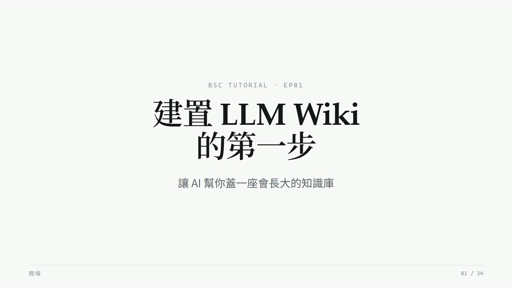
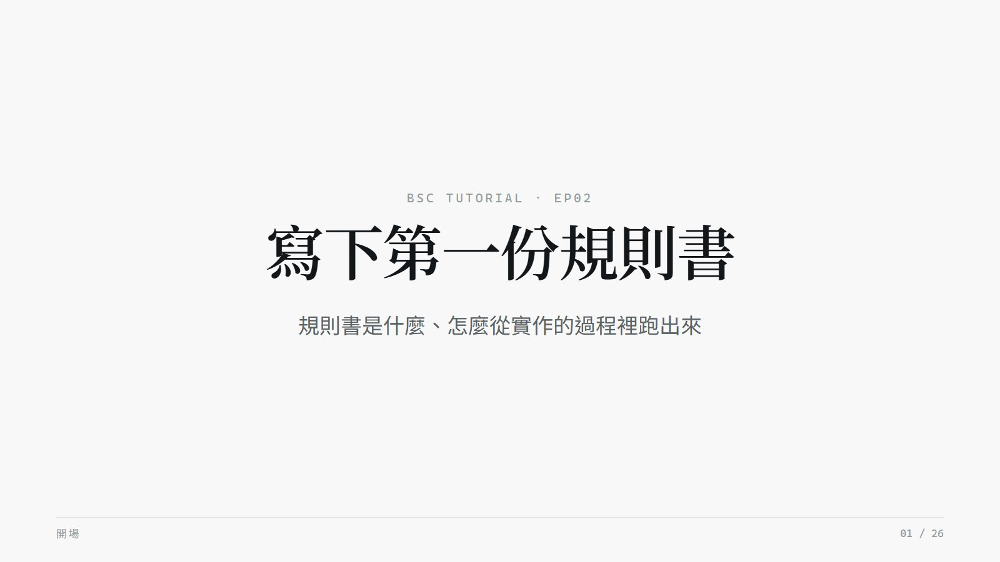
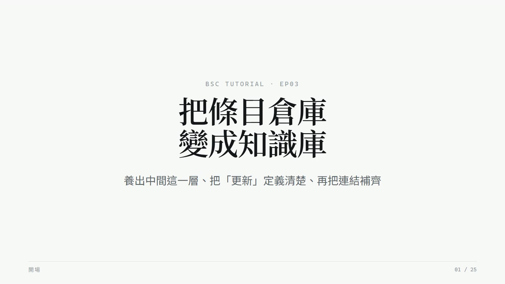
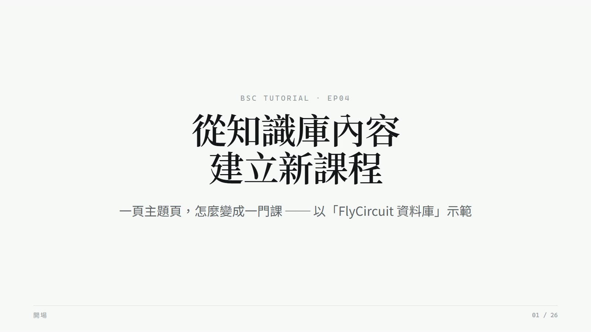
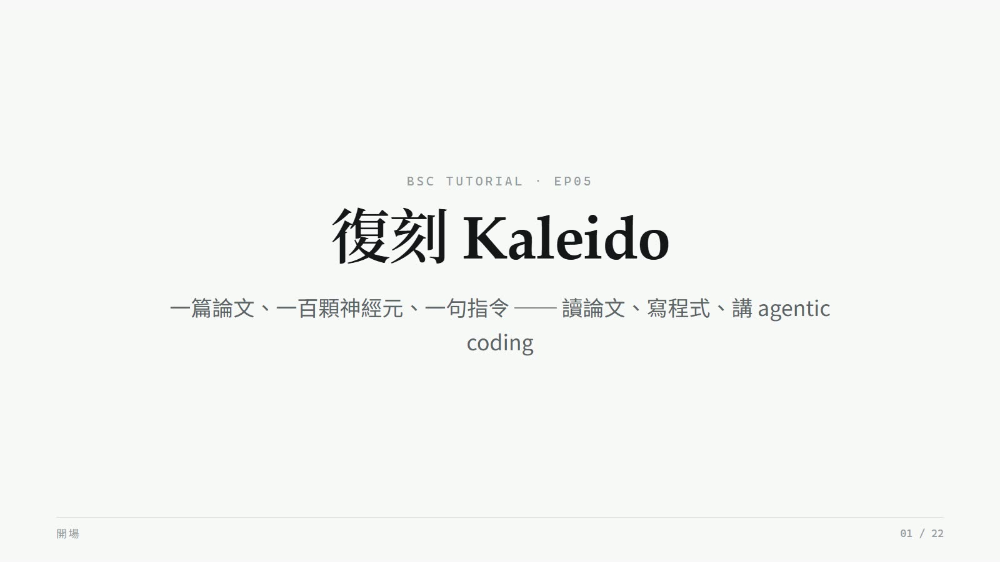

8:57每一集都是一次真實的工作紀錄——每一步的指令、Agent 當下怎麼想怎麼做、 以及當時的畫面，包括中間失敗的地方。
示範怎麼跟 AI Agent 一起做研究工作。五集是同一條真實的工作線： 先把一批研究論文交給 Agent，建成一座有規則、可維護、會成長的知識庫（EP01–03）； 然後反過來用這座知識庫——把主題頁變成一門課（EP04）、把論文條目當規格，讓 Agent 復刻出論文的程式（EP05）。
每一集都是真實工作階段的紀錄：每一步的指令、Agent 怎麼想怎麼做、撞了什麼牆、哪些方案被否決—— 包括做壞被退回重做的部分。素材恰好是神經科學的論文，但方法不綁定領域： 你可以拿自己領域的文獻，照同樣的流程走一遍。
要學的不是某個工具的操作，是分工：規格、邊界、驗收是人的；執行的迴圈是 Agent 的。 五集看完，你會知道哪些決定不該交出去，以及交出去的部分要怎麼驗收。

8:57
10:07六篇條目寫好了，但六個檔案放在資料夾裡不叫知識庫。這一集長出主題層、定義「更新」—— 新論文丟進收件匣就能被吸收——再把頁面之間的連結做完整，從「一堆檔案」變成「一座 wiki」。

11:36知識庫不只是拿來查的，也可以拿來教自己。這一集拿第一個主題「FlyCircuit 資料庫」示範： 主題頁的七節變成七堂課、條目變成講義、〈還沒解決的事〉變成思考題——Agent 攤開結構，人決定教什麼。

11:49一篇論文、一百顆神經元、一句指令。講清楚 Kaleido 的兩招，讓 Agent 從零把程式寫出來—— 三視圖、旋轉動畫、撞的牆都留著——再回頭講 agentic coding 是怎麼一回事。

10:26